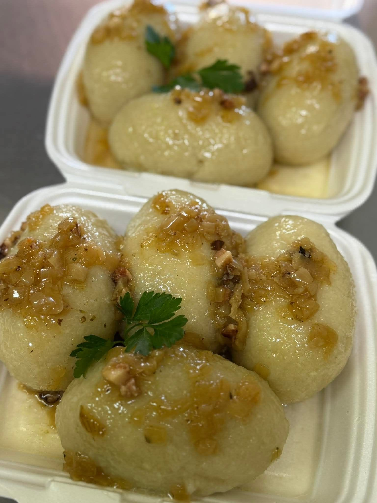
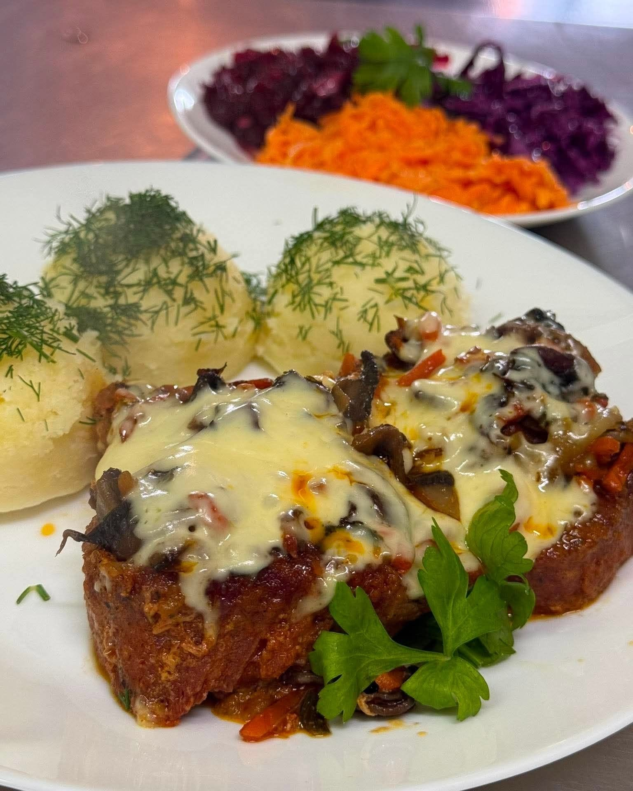
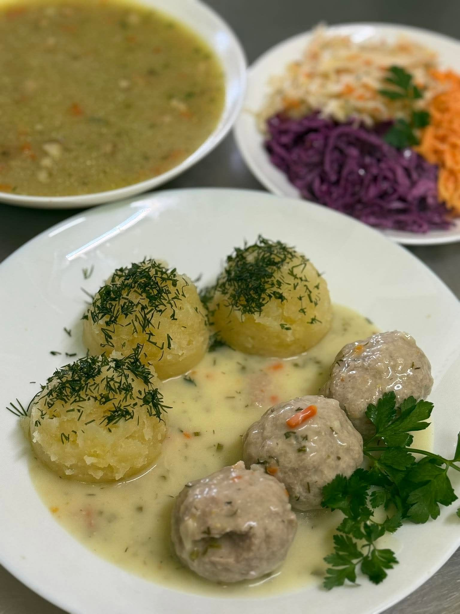
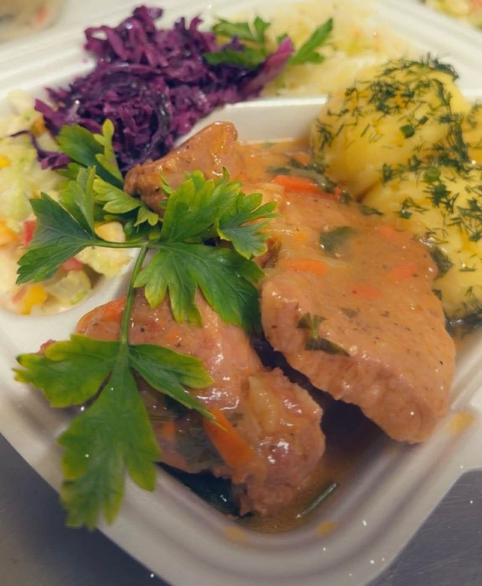
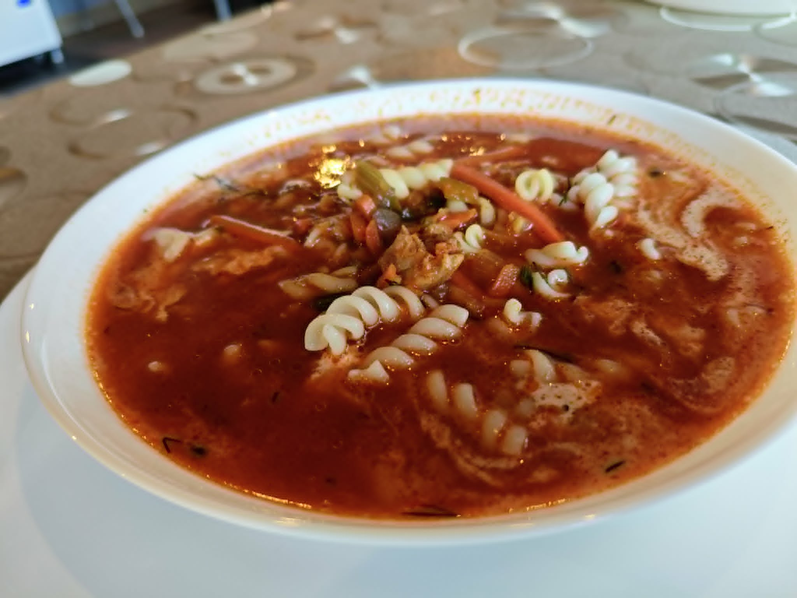
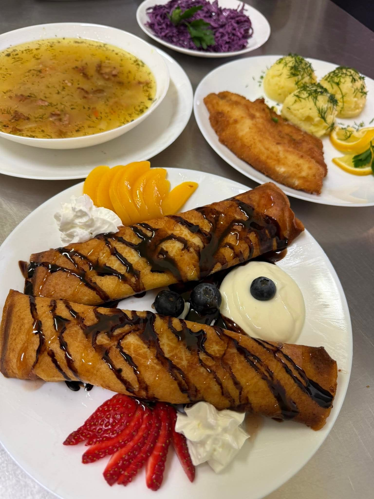

Prawdziwe domowe obiady w Koszarówce
Bar Emilia to mały, lokalny bar z tradycyjną polską kuchnią. Wpadnij na pożywne śniadanie, świetną zupę lub klasyczny obiad – na miejscu, na wynos i z dowozem.
Domowe obiady
Klasyczne i świeże smaki, jak u mamy.
Śniadania
Solidny posiłek na początek dnia.
Dowóz i wynos
Dowozimy na terenie Grajewa za 8 zł.
Przystępne ceny
Syte dania od 20 do 42 zł.
Nasi klienci polecają
Słynne Kartacze
Ręcznie robione na miejscu z należytą starannością. Dostępne w czwartek i niedzielę.
Schab panierowany
Klasyka gatunku. Solidna porcja i chrupiąca panierka z dodatkami.
Tradycyjny Żurek
Nasza specjalność na prawdziwym zakwasie — sycący i rozgrzewający.
Pierogi z mięsem
Ręcznie lepione na miejscu z dużą ilością farszu.
Zapiekanka klasyczna
Szybka, ciepła przekąska prosto z pieca na mniejszy głód.
Placek po węgiersku
Pyszny, aromatyczny i niesamowicie pożywny wybór.
Nasze dania






O Barze Emilia
Jesteśmy niewielkim, lokalnym barem stworzonym z pasji do domowej polskiej kuchni. Gotujemy klasycznie, uczciwie, ze świeżych składników i z myślą o osobach, które szukają smaków prosto z domowego stołu.
Znajdziesz nas niedaleko Grajewa — wpadnij na spokojny obiad z rodziną lub odbierz ciepłe jedzenie w drodze z pracy. Jesteśmy tu dla Ciebie.
Imprezy i Catering
Organizujemy wszelkiego rodzaju cateringi oraz przygotowujemy wypieki i dania na zamówienie — pierogi, ciasta i więcej.
Przyjęcia okolicznościowe
Urodziny, imieniny, chrzciny, komunie i inne uroczystości.
Wyroby domowe na wagę
Catering domowy, znakomite pierogi lepione na miejscu i pyszne domowe ciasta.
Zadzwoń lub zapytaj w lokalu, chętnie przygotujemy ofertę.
Kontakt i Dojazd
Czekamy na Ciebie!
Możesz zamówić jedzenie z dowozem na terenie Grajewa (8 zł) lub odebrać osobiście na wynos (opakowanie 1 zł). Zadzwoń, chętnie przygotujemy coś pysznego.
19-200 Grajewo
Sobota: Zamknięte
Niedziela: 12:00–17:00